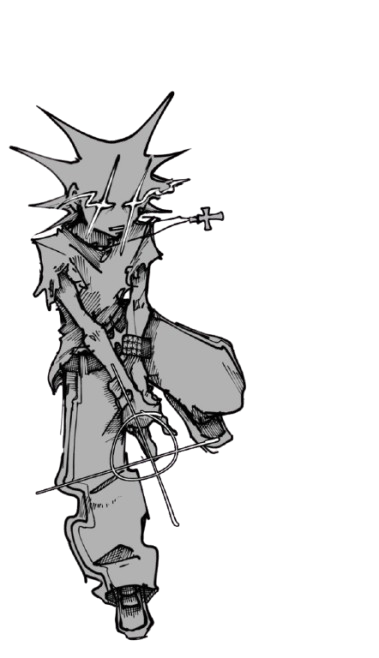
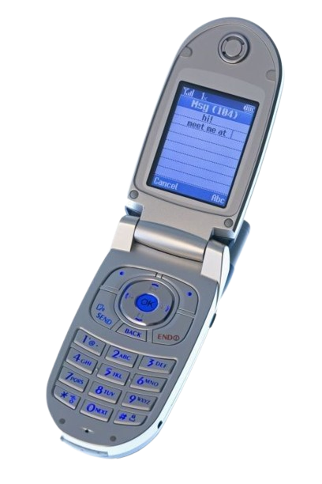
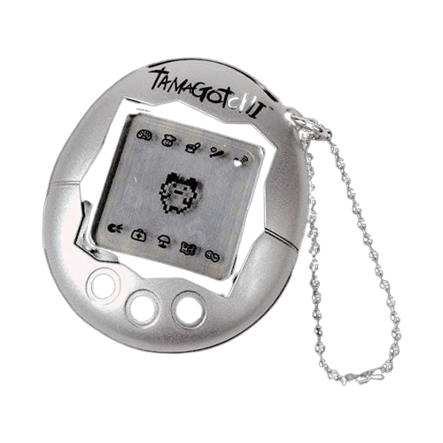

WELCOME 2 MRIDUL.EXE
yo, i am mridul and this is my weird little corner of the internet. not here to be polished. not here to be boring. not here to look like every other clean fake website.
i like strange things, old internet energy, y2k visuals, glowing text, chaotic layouts, and pages that actually feel alive. i think websites should say something about the person behind them. not just "here is my profile" but more like here is my brain.
right now i am building stuff with html, css, and js. i want to make places on the internet where people can create their own style and not be forced into the same template as everyone else.

ABOUT ME
i make things, break things, then remake them cooler.
CURRENT OBSESSIONS
weirdcore / y2k / glowing ui / custom layouts / old web freedom / artist energy
MISSION
bringing personality back to the internet.
STATUS
probably coding / probably changing this page again / probably online in spirit
LIKES
retro web, artists, cool people, weird graphics, layered images, stars everywhere, pages that feel personal
DISLIKES
boring design, copy-paste personalities, fake polished internet, soulless apps
TO-DO
make this site stranger / add more buttons / add more images / make everything more me

VISITORS
for testing dummy...